Maps
## terra 1.9.11## Loading required package: sp## Linking to GEOS 3.13.0, GDAL 3.8.5, PROJ 9.5.1; sf_use_s2() is TRUE##
## Attaching package: 'rnaturalearth'## The following object is masked from 'package:rnaturalearthdata':
##
## countries110## ── Attaching core tidyverse packages ──────────────────────── tidyverse 2.0.0 ──
## ✔ dplyr 1.2.1 ✔ readr 2.2.0
## ✔ forcats 1.0.1 ✔ stringr 1.6.0
## ✔ ggplot2 4.0.3 ✔ tibble 3.3.1
## ✔ lubridate 1.9.5 ✔ tidyr 1.3.2
## ✔ purrr 1.2.2## ── Conflicts ────────────────────────────────────────── tidyverse_conflicts() ──
## ✖ tidyr::extract() masks raster::extract(), terra::extract()
## ✖ dplyr::filter() masks stats::filter()
## ✖ dplyr::lag() masks stats::lag()
## ✖ dplyr::select() masks raster::select()
## ℹ Use the conflicted package (<http://conflicted.r-lib.org/>) to force all conflicts to become errorsPlot using plot() function

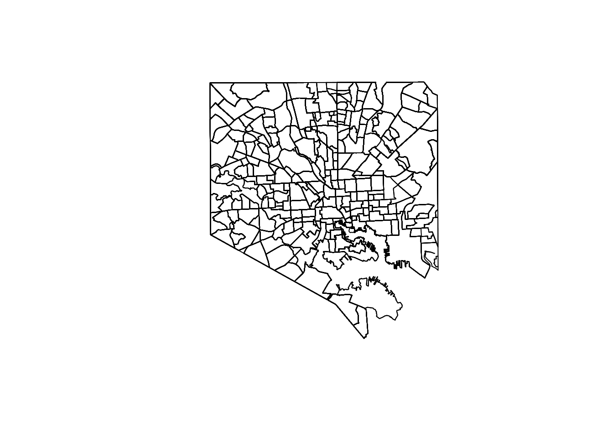
Using ggplot2
Start by building the map area:
multi_polygon_sf <- st_as_sf(df_simplified) #converting to sf object
outline_plot <-ggplot() +
geom_sf(data = multi_polygon_sf$geometry.y, fill = "lightblue", color = "blue") +
theme_minimal() +
labs(title = "Nonprofits and Neighborhood Demographics")
outline_plot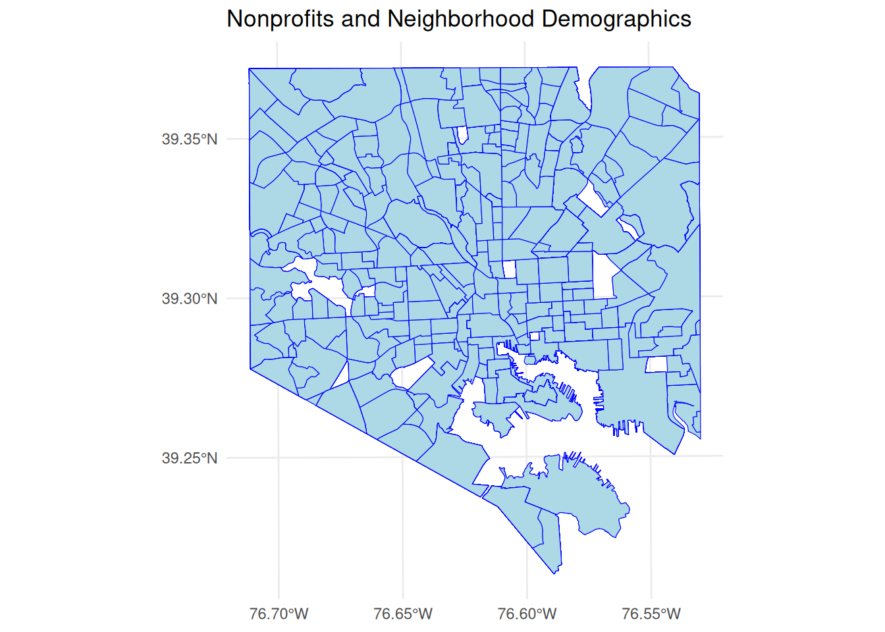
Neighborhood Demographics
# make data at neighborhood level to plot maps
neighborhoods_sf <- st_as_sf(neighborhoods) # convert to sf object
neighborhoods_sf <- neighborhoods_sf %>% mutate(Percent_AA
= round(Blk_AfAm/Population*100, digits = 2)) %>% # make our variables like before but this time at neighborhood level only
# create new Majority_AA variable that indicates if Percent_AA is greater than 50% or not %>%
mutate(Majority_AA = case_when(
Percent_AA > 50 ~ "Yes",
Percent_AA < 50 ~ "No")) %>%
# create a new variable about this in text
mutate(Neighborhood_type = case_when(
Percent_AA > 50 ~ "Majority\nBlack",
Percent_AA < 50 ~ "Majority\nNon-Black")) %>%
# make this a factor and order by level appearance in the data
mutate(Neighborhood_type = as_factor(Neighborhood_type),
Neighborhood_type = forcats::fct_inorder(Neighborhood_type))
neighborhood_dem <- ggplot() +geom_sf(data = neighborhoods_sf, aes(fill = Neighborhood_type))+
scale_fill_manual(values = c("Majority\nBlack" = "#482677FF", "Majority\nNon-Black" = "#20A387FF"), na.value = "#D3D3D3")+
theme_minimal()
neighborhood_dem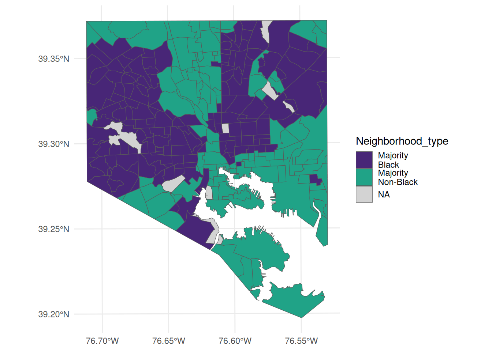
Map of High vs Low Asset Orgs
asset_plot_high_Vs_low <- neighborhood_dem +
geom_sf(data = multi_polygon_sf, alpha = 0.8, shape = 21, color ="black", fill = "#DCE319FF")+ facet_grid(~ASSET_High_text)+
theme_void() +
labs(title = "High vs Low Asset Non-Profits in Baltimore")
asset_plot_high_Vs_low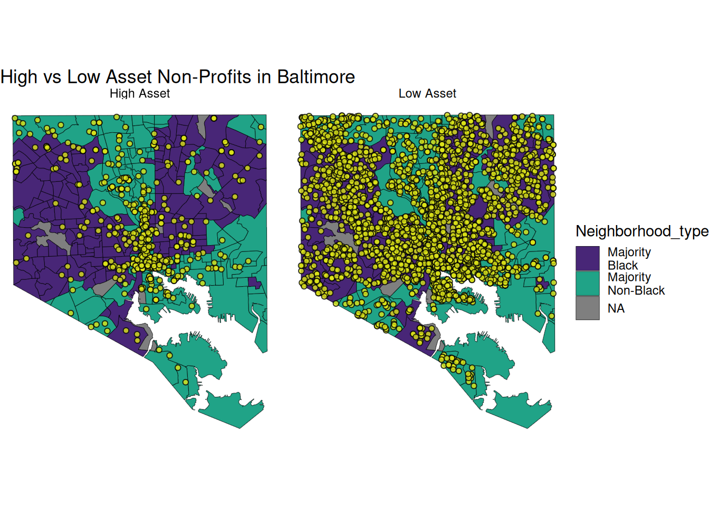
Map of different types of orgs by asset
asset_plot_all_faceted <- neighborhood_dem +
geom_sf(data = multi_polygon_sf, alpha = 0.8, shape = 21, color ="black", fill = "#DCE319FF")+ facet_wrap(~NTEE_text, ncol = 3 )+
theme_void() +
labs(title = "Non-Profits in Baltimore by Type")
asset_plot_all_faceted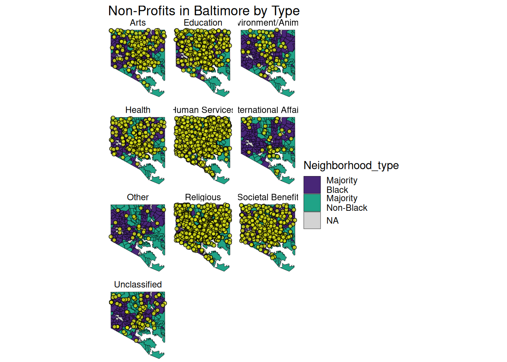
High Asset Non-Profits in Baltimore by Type
data_to_map <-multi_polygon_sf %>% filter(ASSET_High_text == "High Asset")
asset_plot <- neighborhood_dem +
geom_sf(data = data_to_map, alpha = 0.8, shape = 21, color ="black", fill = "#DCE319FF")+ facet_wrap(~NTEE_text, ncol = 3 )+
theme_void() +
labs(title = "High Asset Non-Profits in Baltimore by Type")
asset_plot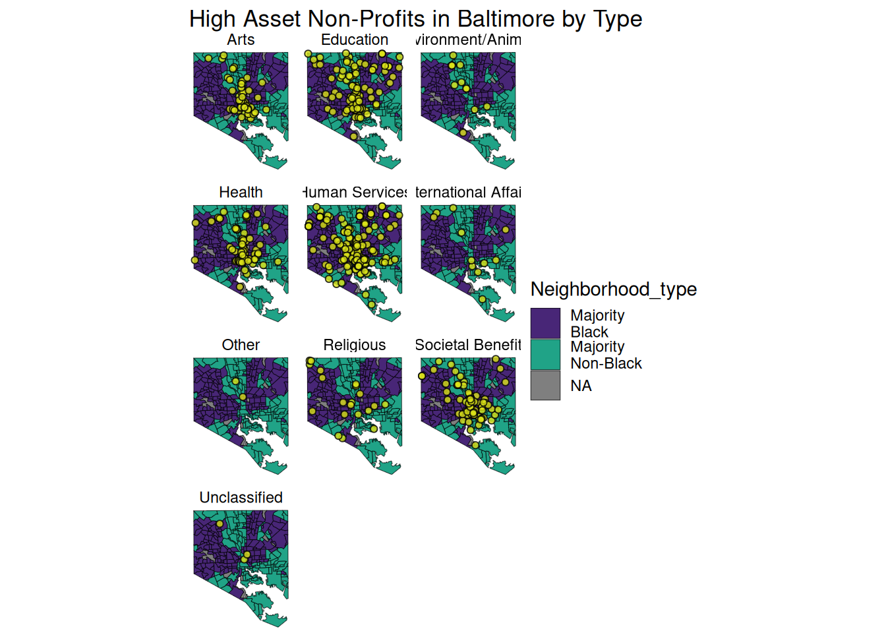
Old work
multi_polygon_sf <- st_as_sf(df_simplified)
AA_plot <-ggplot() +
geom_sf(data = multi_polygon_sf, aes(color = Majority_AA)) +
theme_minimal() +
labs(title = "Neighborhood by Demographics")
AA_plot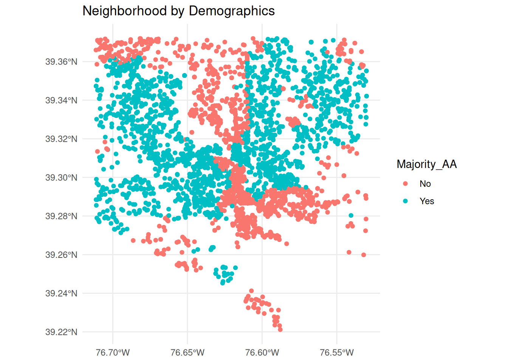
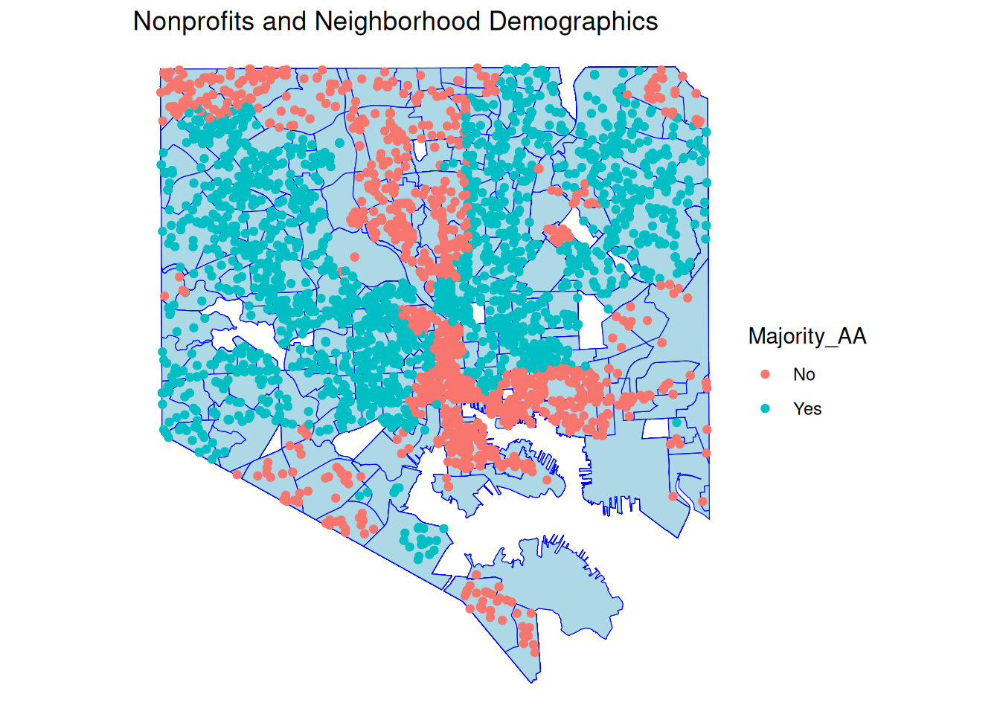
outline_plot +
geom_sf(data = multi_polygon_sf, aes(color = Majority_AA))+
facet_grid(~ASSET_High_text)+
theme_void() 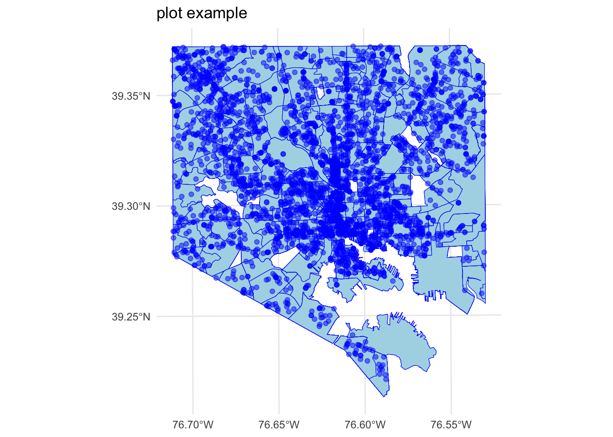
points_plot <-outline_plot +
geom_sf(data = multi_polygon_sf$geometry.x, fill = "lightblue", color = "blue", alpha = 0.5) +
theme_minimal() +
labs(title = "plot example")
points_plot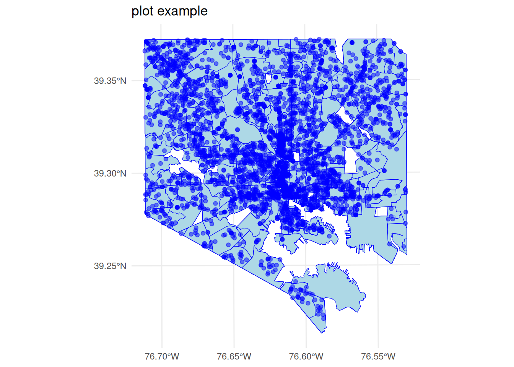
coords <- st_coordinates(df_simplified$geometry.x)
coords_df <- as.data.frame(coords)
colnames(coords_df) <- c("longitude", "latitude")
df_simplified <-bind_cols(coords_df, df_simplified)
#leaflet(coords_df) %>% addMarkers() %>% addTiles()df_simplified %>% filter(Majority_AA == "Yes") %>%
ggplot( aes(x = longitude, y = latitude, color = ASSET_High)) + geom_point()+
theme_minimal() 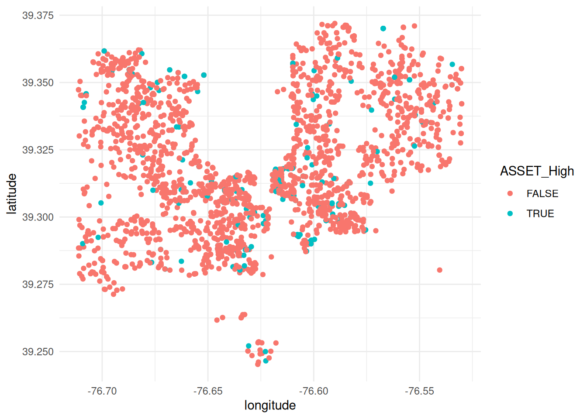
df_simplified %>%
ggplot( aes(x = longitude, y = latitude)) +facet_grid(ASSET_High ~ Majority_AA) + geom_point()+
theme_minimal()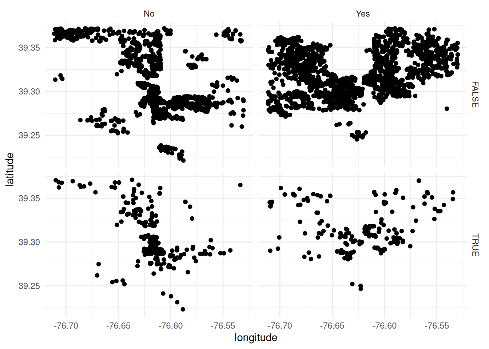
- keep high asset overall for online
- #############old stuff:
df_simplified <-bind_cols(coords_df, df_simplified)
library(ggmap)
library(osmdata)
library(devtools)
mad_map <- get_map(getbb("Limete, Kinshasa"), maptype = "terrain", source = "osm")
ggmap(mad_map)for_plot <-df_simplified %>% dplyr::select(Name, ORG_NAME_CURRENT, longitude, latitude)
# getting the map
mapplotarea <- get_map(location = c(lon = mean(for_plot$longitude), lat = mean(for_plot$latitude)), zoom = 11,maptype = "satellite", scale = 2)
# plotting the map with some points on it
plot1 <- ggmap(mapplotarea) +
geom_point(data =for_plot, aes(x = lon, y = lat, fill = "red", alpha = 0.8), size = 2, shape = 21) +
guides(fill=FALSE, alpha=FALSE, size=FALSE)neighborhoods <-df_simplified$geometry.x
library(rnaturalearthdata)
library(rnaturalearth)
world <- ne_countries(scale = "medium", returnclass = "sf")
glimpse(world)
outline_plot<-ggplot(data = world) +
geom_sf() + geom_sf(data = neighborhoods)+
coord_sf(xlim = c(-76.74, -76.5), ylim = c(39.19, 39.4),
expand = FALSE)
outline <-plot(df_simplified$geometry.y)
multi_polygon_sf <- st_as_sf(df_simplified)
outline +geom_point(data = df_simplified, aes(x = longitude, y = latitude, fill = BMF_ASSET_CODE), size = 2,
shape = 23)
test <-outline + geom_point(data = df_simplified, aes(x = longitude, y = latitude))CiMgTWFwcwoKYGBge3J9CgpsaWJyYXJ5KFJDb2xvckJyZXdlcikgCmxpYnJhcnkobGVhZmxldCkKbGlicmFyeSh0ZXJyYSkKIyBmb3IgbWV0YWRhdGEvYXR0cmlidXRlcy0gdmVjdG9ycyBvciByYXN0ZXJzCmxpYnJhcnkocmFzdGVyKQpsaWJyYXJ5KHNmKQpsaWJyYXJ5KHJuYXR1cmFsZWFydGhkYXRhKQpsaWJyYXJ5KHJuYXR1cmFsZWFydGgpCmxpYnJhcnkodGlkeXZlcnNlKQoKZGZfc2ltcGxpZmllZCA8LSByZWFkX3JkcyhoZXJlOjpoZXJlKCJkYXRhL3Byb2Nlc3NlZC9mb3JtYXBzLnJkcyIpKSAjIG9yZyBhbmQgc2hhcGUgZGF0YQpuZWlnaGJvcmhvb2RzIDwtIHJlYWRfcmRzKGhlcmU6OmhlcmUoImRhdGEvcHJvY2Vzc2VkL25laWdoYm9yaG9vZF9zaGFwZV9kYXRhLnJkcyIpKSNuZWlnaGJvcmhvb2Qgc3RhdCBkYXRhIChyZWFkIGludG8gUikKCmBgYAoKCiMgUGxvdCB1c2luZyBgcGxvdCgpYCBmdW5jdGlvbgoKYGBge3J9CiMgUGxvdHRpbmcgc2ltcGxlIGZlYXR1cmVzIChzZikgd2l0aCBwbG90IApwbG90KGRmX3NpbXBsaWZpZWQkZ2VvbWV0cnkueCkKcGxvdChkZl9zaW1wbGlmaWVkJGdlb21ldHJ5LnkpCmxpYnJhcnkoc3ApCmxpYnJhcnkobGVhZmxldCkKYGBgCgoKCiMgVXNpbmcgZ2dwbG90MgoKU3RhcnQgYnkgYnVpbGRpbmcgdGhlIG1hcCBhcmVhOgoKYGBge3J9Cm11bHRpX3BvbHlnb25fc2YgPC0gc3RfYXNfc2YoZGZfc2ltcGxpZmllZCkgI2NvbnZlcnRpbmcgdG8gc2Ygb2JqZWN0Cm91dGxpbmVfcGxvdCA8LWdncGxvdCgpICsKICAgIGdlb21fc2YoZGF0YSA9IG11bHRpX3BvbHlnb25fc2YkZ2VvbWV0cnkueSwgZmlsbCA9ICJsaWdodGJsdWUiLCBjb2xvciA9ICJibHVlIikgKwogICAgdGhlbWVfbWluaW1hbCgpICsKICAgbGFicyh0aXRsZSA9ICJOb25wcm9maXRzIGFuZCBOZWlnaGJvcmhvb2QgRGVtb2dyYXBoaWNzIikKb3V0bGluZV9wbG90CgpgYGAKCiMgTmVpZ2hib3Job29kIERlbW9ncmFwaGljcwoKYGBge3J9CgojIG1ha2UgZGF0YSBhdCBuZWlnaGJvcmhvb2QgbGV2ZWwgdG8gcGxvdCBtYXBzIApuZWlnaGJvcmhvb2RzX3NmIDwtIHN0X2FzX3NmKG5laWdoYm9yaG9vZHMpICMgY29udmVydCB0byBzZiBvYmplY3QKbmVpZ2hib3Job29kc19zZiA8LSBuZWlnaGJvcmhvb2RzX3NmICU+JSBtdXRhdGUoUGVyY2VudF9BQQogID0gcm91bmQoQmxrX0FmQW0vUG9wdWxhdGlvbioxMDAsIGRpZ2l0cyA9IDIpKSAgJT4lICMgbWFrZSBvdXIgdmFyaWFibGVzIGxpa2UgYmVmb3JlIGJ1dCB0aGlzIHRpbWUgYXQgbmVpZ2hib3Job29kIGxldmVsIG9ubHkKCiAgIyBjcmVhdGUgbmV3IE1ham9yaXR5X0FBIHZhcmlhYmxlIHRoYXQgaW5kaWNhdGVzIGlmIFBlcmNlbnRfQUEgaXMgZ3JlYXRlciB0aGFuIDUwJSBvciBub3QgJT4lCiAgbXV0YXRlKE1ham9yaXR5X0FBID0gY2FzZV93aGVuKAogICAgUGVyY2VudF9BQSA+IDUwIH4gIlllcyIsIAogICAgUGVyY2VudF9BQSA8ICA1MCB+ICJObyIpKSAlPiUKICAjIGNyZWF0ZSBhIG5ldyB2YXJpYWJsZSBhYm91dCB0aGlzIGluIHRleHQKICAgbXV0YXRlKE5laWdoYm9yaG9vZF90eXBlID0gY2FzZV93aGVuKAogICAgUGVyY2VudF9BQSA+IDUwIH4gIk1ham9yaXR5XG5CbGFjayIsIAogICAgUGVyY2VudF9BQSA8ICA1MCB+ICJNYWpvcml0eVxuTm9uLUJsYWNrIikpICU+JSAKICAjIG1ha2UgdGhpcyBhIGZhY3RvciBhbmQgb3JkZXIgYnkgbGV2ZWwgYXBwZWFyYW5jZSBpbiB0aGUgZGF0YQogIG11dGF0ZShOZWlnaGJvcmhvb2RfdHlwZSA9IGFzX2ZhY3RvcihOZWlnaGJvcmhvb2RfdHlwZSksCiAgICAgICAgIE5laWdoYm9yaG9vZF90eXBlID0gZm9yY2F0czo6ZmN0X2lub3JkZXIoTmVpZ2hib3Job29kX3R5cGUpKQoKCiBuZWlnaGJvcmhvb2RfZGVtIDwtIGdncGxvdCgpICtnZW9tX3NmKGRhdGEgPSBuZWlnaGJvcmhvb2RzX3NmLCBhZXMoZmlsbCA9IE5laWdoYm9yaG9vZF90eXBlKSkrCiAgIHNjYWxlX2ZpbGxfbWFudWFsKHZhbHVlcyA9IGMoIk1ham9yaXR5XG5CbGFjayIgPSAiIzQ4MjY3N0ZGIiwgIk1ham9yaXR5XG5Ob24tQmxhY2siID0gIiMyMEEzODdGRiIpLCBuYS52YWx1ZSA9ICIjRDNEM0QzIikrCiAgICB0aGVtZV9taW5pbWFsKCkKIG5laWdoYm9yaG9vZF9kZW0KCmBgYAoKCiMgTWFwIG9mIEhpZ2ggdnMgTG93IEFzc2V0IE9yZ3MKCgpgYGB7cn0KYXNzZXRfcGxvdF9oaWdoX1ZzX2xvdyA8LSBuZWlnaGJvcmhvb2RfZGVtICsgCiAgICBnZW9tX3NmKGRhdGEgPSBtdWx0aV9wb2x5Z29uX3NmLCBhbHBoYSA9IDAuOCwgc2hhcGUgPSAyMSwgY29sb3IgPSJibGFjayIsIGZpbGwgPSAiI0RDRTMxOUZGIikrIGZhY2V0X2dyaWQofkFTU0VUX0hpZ2hfdGV4dCkrCiAgICB0aGVtZV92b2lkKCkgKwogICAgIGxhYnModGl0bGUgPSAiSGlnaCB2cyBMb3cgQXNzZXQgTm9uLVByb2ZpdHMgaW4gQmFsdGltb3JlIikgCgoKYXNzZXRfcGxvdF9oaWdoX1ZzX2xvdwoKYGBgCgoKIyBNYXAgb2YgZGlmZmVyZW50IHR5cGVzIG9mIG9yZ3MgYnkgYXNzZXQKYGBge3J9Cgphc3NldF9wbG90X2FsbF9mYWNldGVkIDwtIG5laWdoYm9yaG9vZF9kZW0gKyAKICAgIGdlb21fc2YoZGF0YSA9IG11bHRpX3BvbHlnb25fc2YsIGFscGhhID0gMC44LCBzaGFwZSA9IDIxLCBjb2xvciA9ImJsYWNrIiwgZmlsbCA9ICIjRENFMzE5RkYiKSsgZmFjZXRfd3JhcCh+TlRFRV90ZXh0LCBuY29sID0gMyApKwogICAgdGhlbWVfdm9pZCgpICsKICBsYWJzKHRpdGxlID0gIk5vbi1Qcm9maXRzIGluIEJhbHRpbW9yZSBieSBUeXBlIikgCmFzc2V0X3Bsb3RfYWxsX2ZhY2V0ZWQKYGBgCgojIEhpZ2ggQXNzZXQgTm9uLVByb2ZpdHMgaW4gQmFsdGltb3JlIGJ5IFR5cGUKCmBgYHtyfQpkYXRhX3RvX21hcCA8LW11bHRpX3BvbHlnb25fc2YgJT4lIGZpbHRlcihBU1NFVF9IaWdoX3RleHQgPT0gIkhpZ2ggQXNzZXQiKSAKCmFzc2V0X3Bsb3QgPC0gbmVpZ2hib3Job29kX2RlbSArIAogICAgZ2VvbV9zZihkYXRhID0gZGF0YV90b19tYXAsIGFscGhhID0gMC44LCBzaGFwZSA9IDIxLCBjb2xvciA9ImJsYWNrIiwgZmlsbCA9ICIjRENFMzE5RkYiKSsgZmFjZXRfd3JhcCh+TlRFRV90ZXh0LCBuY29sID0gMyApKwogICAgdGhlbWVfdm9pZCgpICsKICBsYWJzKHRpdGxlID0gIkhpZ2ggQXNzZXQgTm9uLVByb2ZpdHMgaW4gQmFsdGltb3JlIGJ5IFR5cGUiKSAKYXNzZXRfcGxvdApgYGAKCgoKIyBPbGQgd29yayAKCmBgYHtyfQptdWx0aV9wb2x5Z29uX3NmIDwtIHN0X2FzX3NmKGRmX3NpbXBsaWZpZWQpCkFBX3Bsb3QgPC1nZ3Bsb3QoKSArCiAgICBnZW9tX3NmKGRhdGEgPSBtdWx0aV9wb2x5Z29uX3NmLCBhZXMoY29sb3IgPSBNYWpvcml0eV9BQSkpICsKICAgIHRoZW1lX21pbmltYWwoKSArCiAgIGxhYnModGl0bGUgPSAiTmVpZ2hib3Job29kIGJ5IERlbW9ncmFwaGljcyIpCkFBX3Bsb3QKCiMrIGZhY2V0X2dyaWQofm11bHRpX3BvbHlnb25fc2YkTWFqb3JpdHlfQUEpKwoKYGBgCgoKYGBge3J9Cm91dGxpbmVfcGxvdCArIAogICAgZ2VvbV9zZihkYXRhID0gbXVsdGlfcG9seWdvbl9zZiwgYWVzKGNvbG9yID0gTWFqb3JpdHlfQUEpKSArCiAgICB0aGVtZV92b2lkKCkgCgoKYGBgCgoKYGBge3J9Cm91dGxpbmVfcGxvdCArIAogICAgZ2VvbV9zZihkYXRhID0gbXVsdGlfcG9seWdvbl9zZiwgYWVzKGNvbG9yID0gTWFqb3JpdHlfQUEpKSsKICAgIGZhY2V0X2dyaWQofkFTU0VUX0hpZ2hfdGV4dCkrCiAgICB0aGVtZV92b2lkKCkgCgoKYGBgCgoKCgpgYGB7cn0KCnBvaW50c19wbG90IDwtb3V0bGluZV9wbG90ICsgCiAgICBnZW9tX3NmKGRhdGEgPSBtdWx0aV9wb2x5Z29uX3NmJGdlb21ldHJ5LngsIGZpbGwgPSAibGlnaHRibHVlIiwgY29sb3IgPSAiYmx1ZSIsIGFscGhhID0gMC41KSArCiAgICB0aGVtZV9taW5pbWFsKCkgKwogICBsYWJzKHRpdGxlID0gInBsb3QgZXhhbXBsZSIpCnBvaW50c19wbG90CgpgYGAKCgoKCgoKYGBge3J9CmNvb3JkcyA8LSBzdF9jb29yZGluYXRlcyhkZl9zaW1wbGlmaWVkJGdlb21ldHJ5LngpCmNvb3Jkc19kZiA8LSBhcy5kYXRhLmZyYW1lKGNvb3JkcykKY29sbmFtZXMoY29vcmRzX2RmKSA8LSBjKCJsb25naXR1ZGUiLCAibGF0aXR1ZGUiKQpkZl9zaW1wbGlmaWVkIDwtYmluZF9jb2xzKGNvb3Jkc19kZiwgZGZfc2ltcGxpZmllZCkKI2xlYWZsZXQoY29vcmRzX2RmKSAlPiUgYWRkTWFya2VycygpICU+JSBhZGRUaWxlcygpCmBgYAoKYGBge3J9CmRmX3NpbXBsaWZpZWQgJT4lIGZpbHRlcihNYWpvcml0eV9BQSA9PSAiWWVzIikgJT4lCmdncGxvdCggYWVzKHggPSBsb25naXR1ZGUsIHkgPSBsYXRpdHVkZSwgY29sb3IgPSBBU1NFVF9IaWdoKSkgKyBnZW9tX3BvaW50KCkrCiAgICB0aGVtZV9taW5pbWFsKCkgCmBgYAoKYGBge3J9CmRmX3NpbXBsaWZpZWQgJT4lIApnZ3Bsb3QoIGFlcyh4ID0gbG9uZ2l0dWRlLCB5ID0gbGF0aXR1ZGUpKSArZmFjZXRfZ3JpZChBU1NFVF9IaWdoIH4gTWFqb3JpdHlfQUEpICsgZ2VvbV9wb2ludCgpKyAKICAgIHRoZW1lX21pbmltYWwoKQpgYGAKCi0ga2VlcCBoaWdoIGFzc2V0IG92ZXJhbGwgZm9yIG9ubGluZSAKLSAKIyMjIyMjIyMjIyMjI29sZCBzdHVmZjoKYGBge3IsIGluY2x1ZGUgPSBGQUxTRX0gCiNvbGQKIyBnZW9fY2xlYW4gPC0gZGZfc2ltcGxpZmllZCAlPiUgZHBseXI6OnNlbGVjdChlaW4sIGxvbiwgbGF0KSAlPiUgZHJvcF9uYShsb24pICMgb25lIHJvdyAtIHdpbGwgbmVlZCB0byByZW1vdmUgZm9ybSBjYm9zCiMgY29vcmRpbmF0ZXMoZ2VvX2NsZWFuKSA8LSB+bG9uK2xhdAojIGxlYWZsZXQoZ2VvX2NsZWFuKSAlPiUgYWRkTWFya2VycygpICU+JSBhZGRUaWxlcygpCgpgYGAKCmBgYHtyLCBldmFsID0gRkFMU0V9CmRmX3NpbXBsaWZpZWQgPC1iaW5kX2NvbHMoY29vcmRzX2RmLCBkZl9zaW1wbGlmaWVkKQoKbGlicmFyeShnZ21hcCkKbGlicmFyeShvc21kYXRhKSAKbGlicmFyeShkZXZ0b29scykKCm1hZF9tYXAgPC0gZ2V0X21hcChnZXRiYigiTGltZXRlLCBLaW5zaGFzYSIpLCBtYXB0eXBlID0gInRlcnJhaW4iLCBzb3VyY2UgPSAib3NtIikKZ2dtYXAobWFkX21hcCkKYGBgCgpgYGB7ciwgZXZhbCA9IEZBTFNFfQoKCgpmb3JfcGxvdCA8LWRmX3NpbXBsaWZpZWQgJT4lIGRwbHlyOjpzZWxlY3QoTmFtZSwgT1JHX05BTUVfQ1VSUkVOVCwgbG9uZ2l0dWRlLCBsYXRpdHVkZSkKIyBnZXR0aW5nIHRoZSBtYXAKbWFwcGxvdGFyZWEgPC0gZ2V0X21hcChsb2NhdGlvbiA9IGMobG9uID0gbWVhbihmb3JfcGxvdCRsb25naXR1ZGUpLCBsYXQgPSBtZWFuKGZvcl9wbG90JGxhdGl0dWRlKSksIHpvb20gPSAxMSxtYXB0eXBlID0gInNhdGVsbGl0ZSIsIHNjYWxlID0gMikKIyBwbG90dGluZyB0aGUgbWFwIHdpdGggc29tZSBwb2ludHMgb24gaXQKcGxvdDEgPC0gZ2dtYXAobWFwcGxvdGFyZWEpICsKICBnZW9tX3BvaW50KGRhdGEgPWZvcl9wbG90LCBhZXMoeCA9IGxvbiwgeSA9IGxhdCwgZmlsbCA9ICJyZWQiLCBhbHBoYSA9IDAuOCksIHNpemUgPSAyLCBzaGFwZSA9IDIxKSArCiAgZ3VpZGVzKGZpbGw9RkFMU0UsIGFscGhhPUZBTFNFLCBzaXplPUZBTFNFKQoKCmBgYAoKYGBge3IsIGV2YWwgPSBGQUxTRX0KbmVpZ2hib3Job29kcyA8LWRmX3NpbXBsaWZpZWQkZ2VvbWV0cnkueApsaWJyYXJ5KHJuYXR1cmFsZWFydGhkYXRhKQpsaWJyYXJ5KHJuYXR1cmFsZWFydGgpCndvcmxkIDwtIG5lX2NvdW50cmllcyhzY2FsZSA9ICJtZWRpdW0iLCByZXR1cm5jbGFzcyA9ICJzZiIpCmdsaW1wc2Uod29ybGQpCm91dGxpbmVfcGxvdDwtZ2dwbG90KGRhdGEgPSB3b3JsZCkgKwogICAgZ2VvbV9zZigpICsgIGdlb21fc2YoZGF0YSA9IG5laWdoYm9yaG9vZHMpKwogICAgY29vcmRfc2YoeGxpbSA9IGMoLTc2Ljc0LCAtNzYuNSksIHlsaW0gPSBjKDM5LjE5LCAzOS40KSwgCiAgICAgICAgICAgICBleHBhbmQgPSBGQUxTRSkKCgpvdXRsaW5lIDwtcGxvdChkZl9zaW1wbGlmaWVkJGdlb21ldHJ5LnkpCgoKCiBtdWx0aV9wb2x5Z29uX3NmIDwtIHN0X2FzX3NmKGRmX3NpbXBsaWZpZWQpCgoKCm91dGxpbmUgK2dlb21fcG9pbnQoZGF0YSA9IGRmX3NpbXBsaWZpZWQsIGFlcyh4ID0gbG9uZ2l0dWRlLCB5ID0gbGF0aXR1ZGUsIGZpbGwgPSBCTUZfQVNTRVRfQ09ERSksIHNpemUgPSAyLCAKICAgICAgICAgICAgICAgc2hhcGUgPSAyMykKCnRlc3QgPC1vdXRsaW5lICsgZ2VvbV9wb2ludChkYXRhID0gZGZfc2ltcGxpZmllZCwgYWVzKHggPSBsb25naXR1ZGUsIHkgPSBsYXRpdHVkZSkpCmBgYAoKCgo=